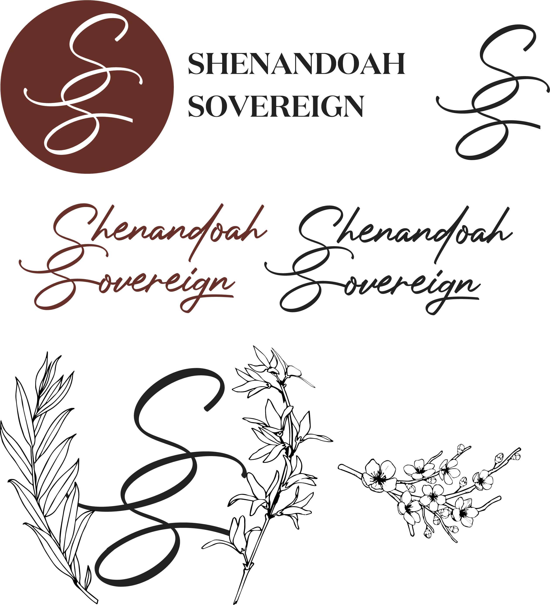

Shenandoah Sovereign - Brand Identity
Overview
Shenandoah Sovereign is a catering and wedding company rooted in Virginia's Blue Ridge region. The brand needed an identity that felt simultaneously elevated and grounded - referencing the natural landscape, Southern hospitality, and the formality of a wedding occasion without tipping into generic bridal cliches.
The Challenge
Build a flexible brand system that could live on everything from formal signage and menus to social media, while honoring the company's dual identity as both a caterer and a wedding venue and coordinator.
Design Decisions
The monogram mark - an interlocking double-S set inside a deep terracotta circle - anchors the system with something seal-like and heirloom in quality. The script wordmark provides warmth and occasion, while the all-caps sans pairing gives the brand a formal register for headers and collateral.
Two color explorations were presented: Option 1 used a brighter red with a charcoal alternate mark, while Option 2 settled into a muted terracotta that reads as more timeless and regionally specific to the Blue Ridge palette. Botanical illustrations including willow, cherry blossom, and jasmine-inspired stems were refined to support the system across print and digital pieces.
Result
A complete brand system with a primary mark, wordmark, monogram variants, and botanical illustration set - ready for menu design, signage, web use, and social applications.

The final identity board shows the chosen terracotta-led system, pairing the monogram seal, formal serif lockup, script wordmark, and refined botanical accents into one cohesive presentation.

This concept board documents the exploration phase, including the brighter red option, alternate type directions, and the initial floral source material before refinement.
Monogram and Lockup
The interlocking double-S monogram acts as the anchor mark, while the serif lockup gives the brand a formal register suited to signage, menus, and wedding collateral.
Color Exploration
The process moved from a brighter red and charcoal direction toward a muted terracotta palette that feels more timeless, regionally grounded, and better aligned with Blue Ridge hospitality.
Botanical Support
Willow, cherry blossom, and jasmine-inspired illustrations extend the identity with softer supporting assets suited to invitations, menus, social graphics, and venue collateral.